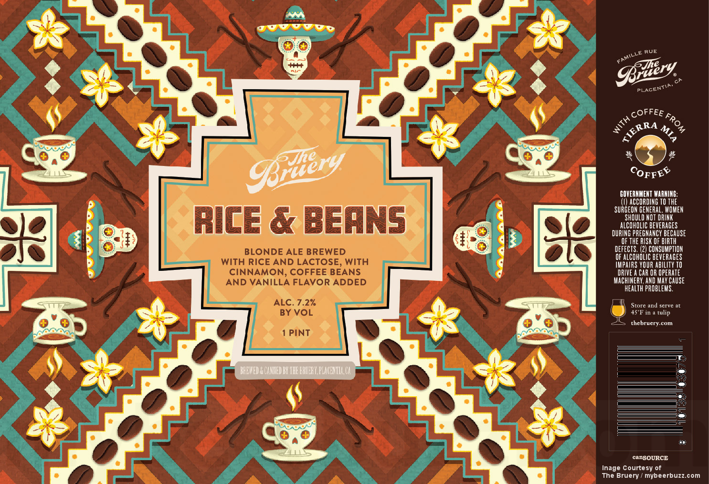

HOME
ALES
Rice and Beans Blonde Ale
The Bruery Co.
Even thought this beer is no longer produced at the brewery, its wonderfully brewed with a heavy dosing of rice, cinnamon and vanilla along with lactose for that extra creamy character. Then added in fresh coffee beans from Tierra Mia. The result is a delightful balance of roasty and sweet, the perfect pairing like rice & beans.
The Bruery is an American brewing company based in Placentia, California, founded by Patrick Rue and named as a fusion between his family name and the word "brewery". It opened in 2008 and has produced an average of 2,500 barrels of beer annually in their 15-barrel brewhouse.
Check out their site HERE 